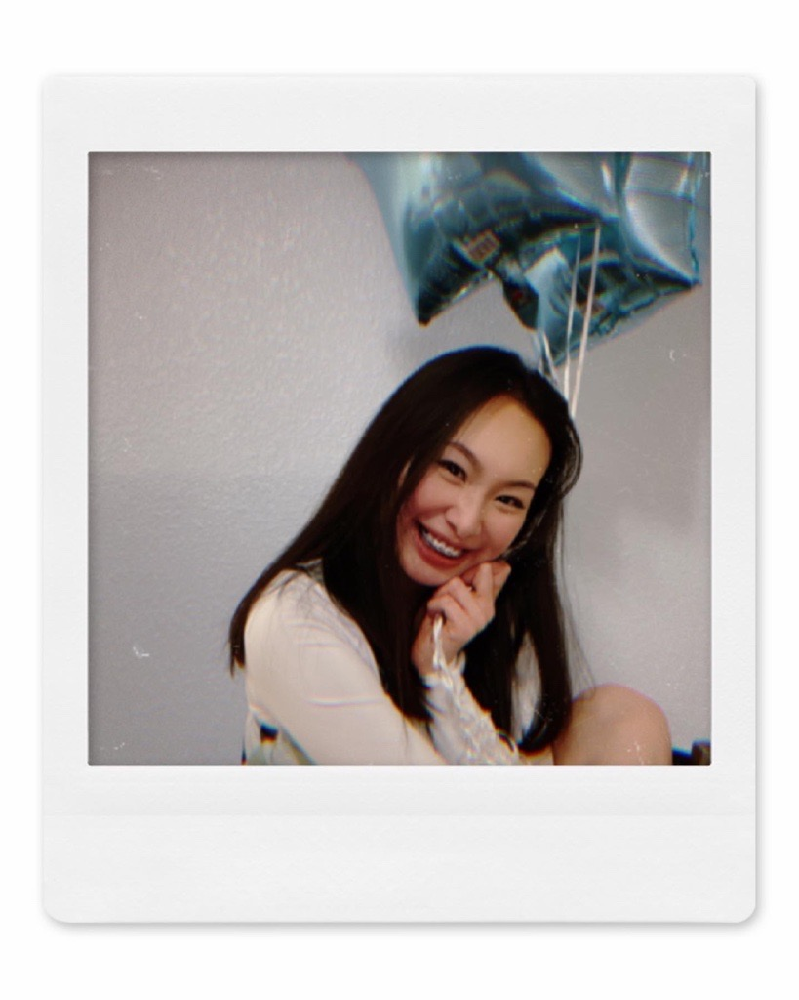

Hi everyone! A little about me, I am pursuing a bachelors degree in computer science with an emphasis in machine learning and data science with a minor in Automotive Technology. Machine Learning is my main focus and I would love to go into a career that includes Machine Learning and Automobiles. I will be starting my internship with Family Search using Machine Learning and I am beyond excited as I start in a week!
Some of my hobbies includes: yoga, cooking, and reading. Reading finance related books on how to be better with money and being smart with it as well as how to utilize my time more wisely has become my new found hobby. I am definitely not the best at it, but I have loved learning on how to do better with money and spending my time more wisely where it will benefit me in the future. I have enjoyed planning and setting certain goals for the long term and short term and cannot wait to see the results!
I love the faculty at Brigham Young University - Idaho. The faculty at this school truly cares about each of their students and wish for the best for each of us. I have learned more than just knowledge for my field but also gospel principles from my Instructors. I have been a member of the Church of Jesus Christ of Latter Day Saints for 26 years now, and I have never felt the spirit stronger anywhere else.
I am taking this course as a requirement for my major, it wasn't a prerequiste for any other classes so my advisor recommended that I take the class toward the end of my degree. Here I am, second to last semester finally taking this course. I have found learning about the careers in different specialties will broaden your opportunity in the future. I never would have thought that I would major in Computer Science, but when I was exposed to the career and learned more about the career opportunities and what a software engineer does I knew it was something I would love to pursue as a career. I think the same applies to Web Design, you will never truly know what your passion is until you try it out. I hope to be able to build my own website for my portfolio after this course to better showcase my experiences throughout path to obtaining my degree!
I am excited to learn as well as get to know everyone!